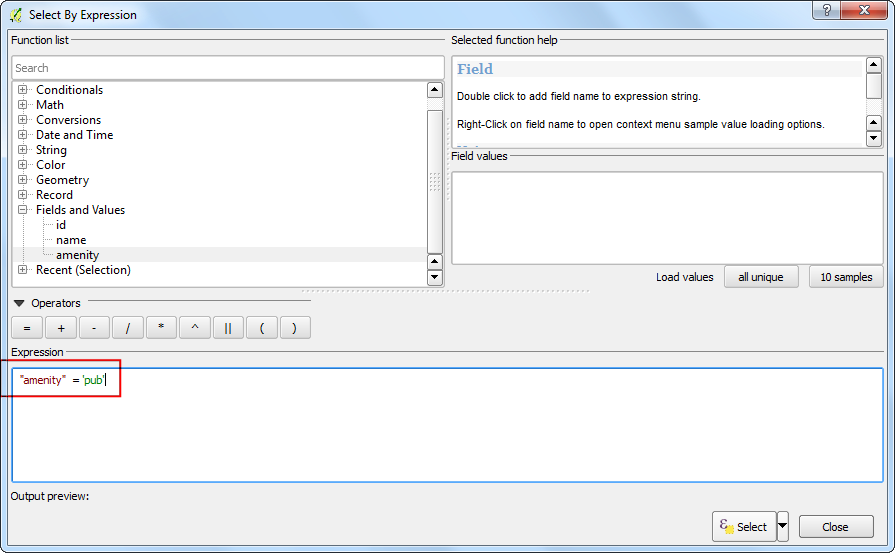

Georeferențierea paginilor topografice și a hărților scanate
[ Download PDF A4 Letter ]
Multe proiecte GIS necesită georeferențierea unor date raster. Georeferențierea reprezintă procesul de atribuire a coordonatelor lumii reale pentru fiecare pixel al rasterului. De multe ori, aceste coordonate sunt obținute prin efectuarea de observații în teren - mai precis, prin folosirea unui dispozitiv GPS la colectarea coordonatelor unor, entități ușor identificabile în imagine sau în hartă. În unele cazuri, atunci când urmăriți să digitizați hărți scanate, puteți obține coordonatele chiar din marcajele de pe hartă. Folosind aceste coordonate sau GCP-urile (Ground Control Points), imaginea va fi modificată, pentru a se potrivi în cadrul sistemului de coordonate ales. În acest tutorial, vom discuta conceptele, strategiile și instrumentele din QGIS necesare efectuării unei georeferențieri de mare precizie.
Privire de ansamblu asupra activității
Vom folosi o hartă scanată a sudului Indiei, din 1870 și o vom georeferenția, folosind QGIS.
Alte competențe pe care le veți dobândi
Procedura
1.Georeferencing in QGIS is done via the ‘Georeferencer GDAL’ plugin. This is a
core plugin - meaning it is already part of your QGIS installation. You just
need to enable it. Go to and enable the Georeferencer GDAL plugin in the
Installed tab. See Utilizarea Plugin-urilor for more details on how to work
with plugins.

Plugin-ul este instalat în meniul Raster. Faceți clic pe pentru a deschide plugin-ul.

Fereastra plugin-ului este împărțită în 2 secțiuni. În secțiunea de sus se afișează rasterul, iar în cea de jos este găzduit tabelul GCP-urilor.

Acum vom deschide imaginea noastră JPG. Mergeți la . Navigați la imaginea, anterior descărcată, a hărții scanate și faceți clic pe Open.

În următorul ecran, vi se va cere să alegeți sistemul de coordonate de referință al rasterului (CRS). Asta înseamnă specificarea proiecției și a datumului punctelor dvs. de control. Dacă ați adunat punctele de control de la sol cu ajutorul unui dispozitiv GPS, ar trebui să aveți CRS-ul WGS84. Dacă georeferențiați în acest mod o hartă scanată, atunci puteți obține informațiile despre CRS chiar din harta respectivă. Coordonatele hărții noastre sunt date în Lat/Long. Nu avem nici o informație despre datum, așa că trebuie să ne asumăm unul adecvat. Deoarece este vorba despre India, iar harta este destul de veche, putem fi destul de siguri că datumul Everest 1830 ne-ar da rezultate bune.

Veți vedea că imaginea va fi încărcată în secțiunea superioară.

Puteți utiliza controalele mărire/deplasare din bara de instrumente, pentru a afla mai multe despre hartă.

În continuare, trebuie să atribuim coordonate unor puncte de pe hartă. Dacă priviți cu atenție, veți observa grila de coordonate cu marcaje. Folosind această grilă, puteți determina coordonatele X și Y ale punctelor în care grilele se intersectează. Faceți clic pe Add Point în bara de instrumente.

În fereastra pop-up, introduceți coordonatele. Amintiți-vă că X = longitudine și Y = latitudine. Clic pe OK.

Veți observa că tabelul GCP are acum un rând cu detaliile primului GCP.

În mod similar, adăugați cel puțin 4 GCP-uri, care să acopere întreaga imagine. Cu cât aveți mai multe puncte, cu atât mai precis se încadrează imaginea dvs. în coordonatele țintă.

O dată ce aveți suficiente puncte, mergeți la .

În fereastra de dialog Transformation settings alegeți Transformation type ca Thin Plate Spline. Denumiți rasterul de ieșire ca 1870_southern_india_modified.tif. Alegeți EPSG:4326 ca SRS țintă, astfel încât imaginea rezultată sa fie într-un datum general compatibil. Asigurați-vă că opțiunea Load in QGIS when done este bifată. Clic pe OK.

Înapoi în fereastra Georeferencer, mergeți la . Acest lucru va începe procesul de modificare a imaginii, conform GCP-urilor, în urma căruia va rezulta rasterul țintă.

O dată ce procesul s-a încheiat, stratul georeferențiat se va încărca în QGIS.

Georeferențierea este acum completă. Dar, ca întotdeauna, o bună practică o reprezintă verificarea muncii. Cum putem afla dacă georeferențierea noastră este corectă? În acest caz, încărcați un fișier shape cu granițele țării, dintr-o sursă de încredere, cum ar fi setul de date Natural Earth, pentru a le compara. Veți observa că acestea se potrivesc destul de bine. Există și unele erori, care se pot reduce prin luarea mai multor puncte de control, prin schimbarea parametrilor de transformare, sau încercând un datum diferit.

{kind=link}
{kind=link}